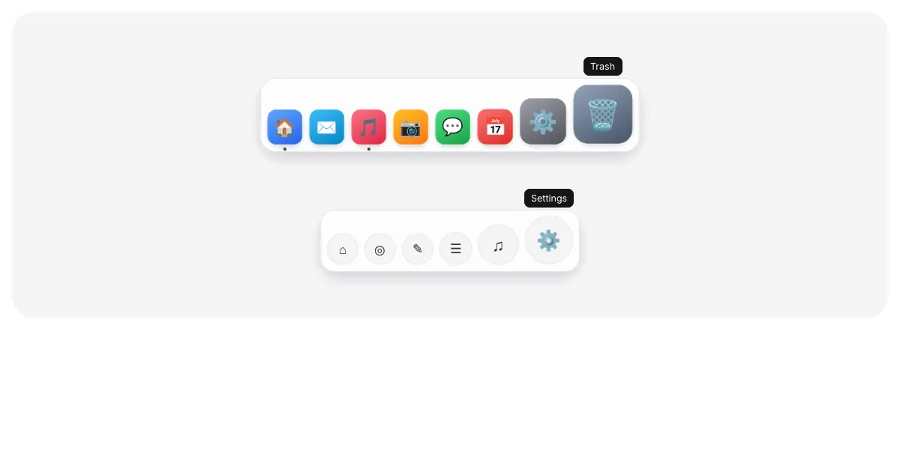

Dock
A macOS-style dock: icons magnify around the pointer, show a label and bounce when clicked.

Usage
Add glowkit next to eframe:
cargo add glowkit eframeThen draw it inside any egui Ui:
use glowkit::prelude::*;
use glowkit::effects::{DockItem, Dock};
let items = [DockItem::new("🏠", "Home").active(true), DockItem::new("✉", "Mail")];
let r = Dock::new(&items).magnification(1.75).show(ui);
if let Some(i) = r.clicked { /* open items[i] */ }Prefer to own the code? The glowkit CLI copies this component's source into your project, shadcn-style:
cargo install glowkit-cli
glowkit add dockEquivalent to
If you know this pattern from Magic UI, React Bits, Aceternity, Motion Primitives and Bencho, Dock is the Rust version: an original egui implementation, not a port, that runs natively and in WebAssembly.
- DockMagic UI
- DockReact Bits
- Floating DockAceternity
- DockMotion Primitives
- Magnifying dockBencho
About Dock
Dock is one of 46 components in glowkit's Motion & Layout category. It lives in the glowkit-effects crate, enabled by the effects feature of glowkit (on by default). It reads its colors from the active glowkit theme, so it matches the rest of your app in light, dark or a custom brand theme, and every color, size and timing has a setter to override it.
Layout pieces that move: a magnifying dock, marquees, animated lists, card stacks and swaps, carousels and coverflow, expandable cards, masonry, parallax heroes, sticky scroll reveals and animated beams between elements.